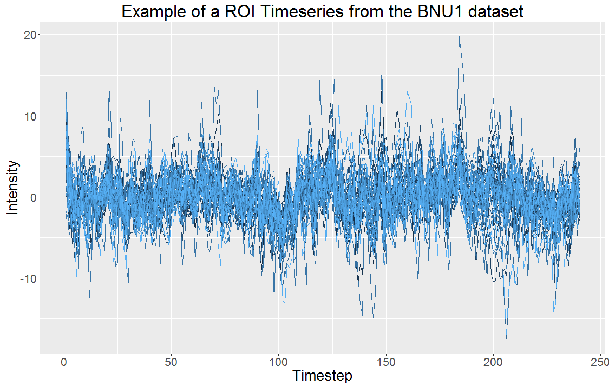

FNGS Slides
Eric Bridgeford
FNGS pipeline leg overview
Eric Bridgeford
Week's Accomplishments
- Upscaled the simulation from last week (more params, more options per param)
- Unfortunately, this means it takes FOREVER
- In meantime, I got my branch of ndmg auto-mergeable
- Reproduced plots to show that our outputs look good
Results for Pipeline
- Timeseries look good
- Notice the consistent peaks and valleys that most points follow
- Means that our brain regions (mostly) fire together, which is consistent with expectation

Things to do this week
- Merge ndmg-master into ndmg-eric-dev
- Write documentation for FNGS
- Find somebody to make sure my documentation is good enough (Eric or Ron?)
- show results of simulations from this past week
- draft together a document summarizing our tGMM approach to Jovo for checking and then Kara/Susan (collaborators)